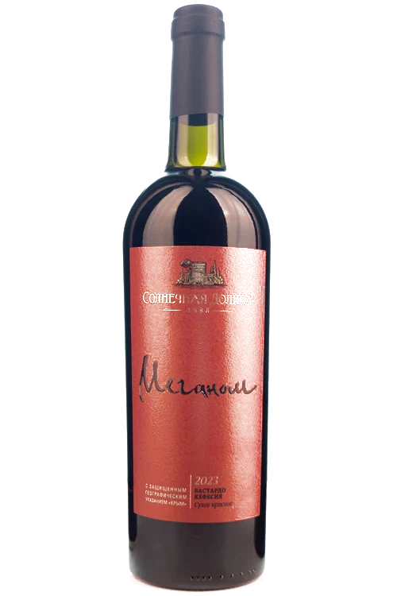
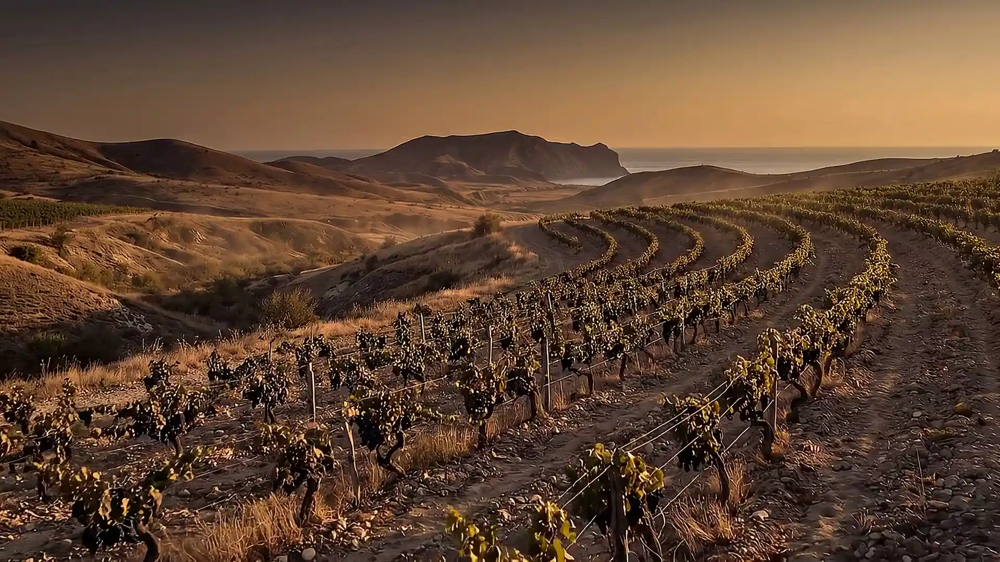
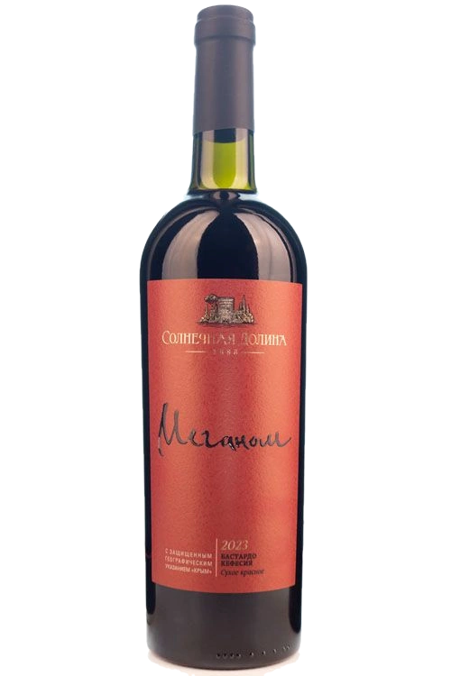
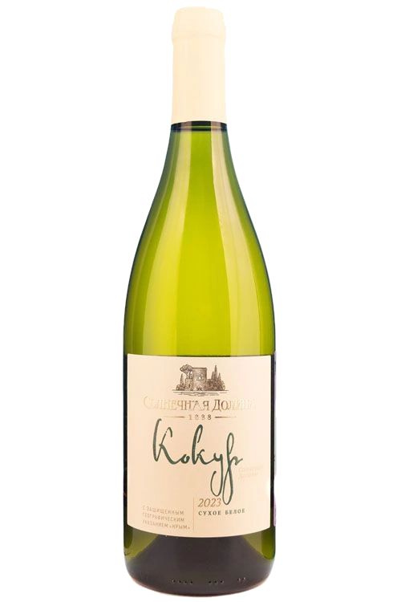
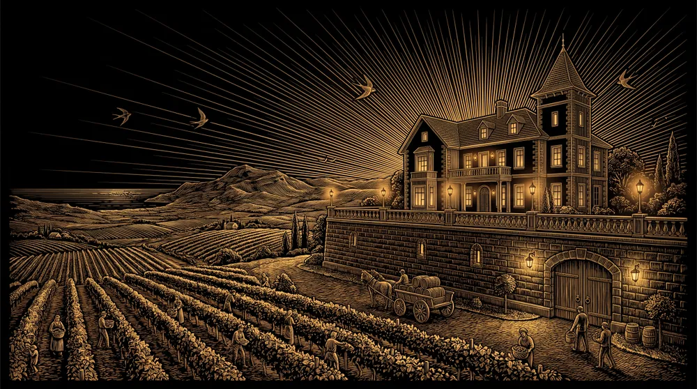
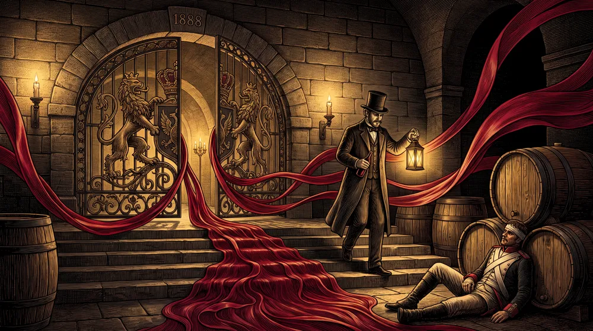
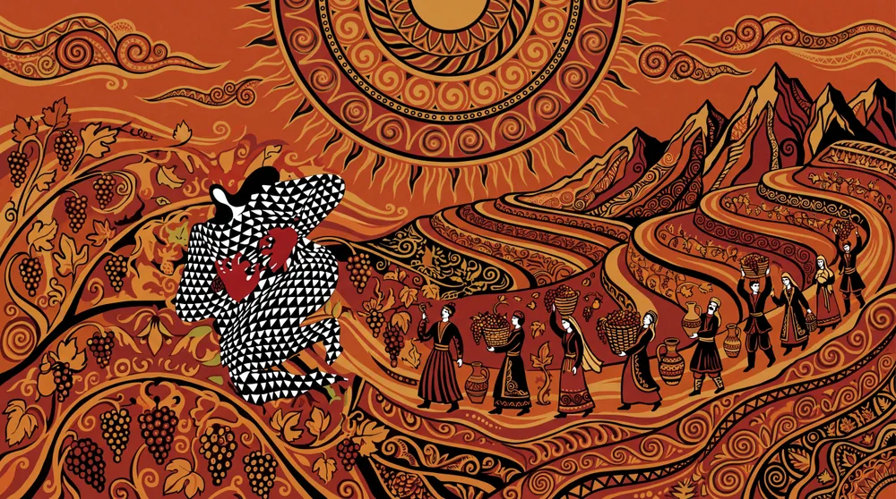

Меганом · одна линия

Мыс Меганом · линейка сухих вин
Рукописная линия с этикетки «Меганома» продолжается за её край — и одним движением рисует мыс, море и берег. Листайте: линия рисуется сама.
Листайте — линия рисуется
Линия стала местом

Линейка «Меганом»
Долина у мыса Меганом — одно из самых солнечных мест юго-восточного Крыма: около 300 ясных дней в году. Меганом — мыс, которым долина выходит к морю. Отсюда — сухие вина линейки: бастардо и кефесия в красном, ассамбляж с кокуром — в белом.


Четыре мира наших этикеток


